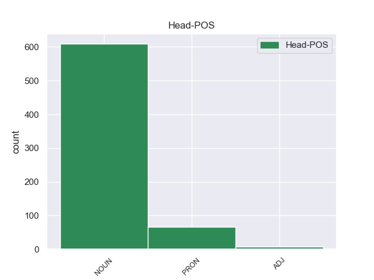
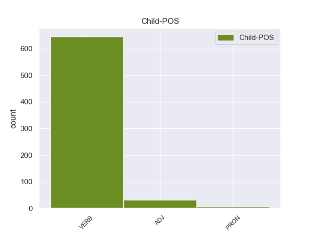

Distribution of features within this leaf



Agreement Rules sorted by frequency.
- When the dependent token is the relative clause modifier(acl:relcl) of the head token, and the dependent token is VERB.
1 I _ _ _ _ 0 _ _ _
2 titoli titolo NOUN S Gender=Masc|Number=Plur 0 _ _ _
3 di _ _ _ _ 0 _ _ _
4 qualche _ _ _ _ 0 _ _ _
5 canzone _ _ _ _ 0 _ _ _
6 che _ _ _ _ 0 _ _ _
7 Luciano _ _ _ _ 0 _ _ _
8 Ligabue _ _ _ _ 0 _ _ _
9 ha _ _ _ _ 0 _ _ _
10 composto comporre VERB V Gender=Masc|Number=Sing|Tense=Past|VerbForm=Part 2 acl:relcl 2:acl:relcl _
11 per _ _ _ _ 0 _ _ _
12 il _ _ _ _ 0 _ _ _
13 film _ _ _ _ 0 _ _ _
14 Radiofreccia _ _ _ _ 0 _ _ _
15 sono _ _ _ _ 0 _ _ _
16 : _ _ _ _ 0 _ _ _
17 Ho _ _ _ _ 0 _ _ _
18 perso _ _ _ _ 0 _ _ _
19 le _ _ _ _ 0 _ _ _
20 parole _ _ _ _ 0 _ _ _
21 , _ _ _ _ 0 _ _ _
22 Metti _ _ _ _ 0 _ _ _
23 in _ _ _ _ 0 _ _ _
24 circolo _ _ _ _ 0 _ _ _
25 il _ _ _ _ 0 _ _ _
26 tuo _ _ _ _ 0 _ _ _
27 amore _ _ _ _ 0 _ _ _
28 . _ _ _ _ 0 _ _ _
1 Ora _ _ _ _ 0 _ _ _
2 , _ _ _ _ 0 _ _ _
3 le _ _ _ _ 0 _ _ _
4 squadre _ _ _ _ 0 _ _ _
5 automobilistiche _ _ _ _ 0 _ _ _
6 devono _ _ _ _ 0 _ _ _
7 costruire _ _ _ _ 0 _ _ _
8 e _ _ _ _ 0 _ _ _
9 usare _ _ _ _ 0 _ _ _
10 un _ _ _ _ 0 _ _ _
11 solo _ _ _ _ 0 _ _ _
12 motore motore NOUN S Gender=Masc|Number=Sing 0 _ _ _
13 , _ _ _ _ 0 _ _ _
14 che _ _ _ _ 0 _ _ _
15 deve _ _ _ _ 0 _ _ _
16 essere _ _ _ _ 0 _ _ _
17 lo _ _ _ _ 0 _ _ _
18 stesso stesso ADJ A Gender=Masc|Number=Sing 12 acl:relcl 12:acl:relcl _
19 per _ _ _ _ 0 _ _ _
20 il _ _ _ _ 0 _ _ _
21 giro _ _ _ _ 0 _ _ _
22 di _ _ _ _ 0 _ _ _
23 qualifica _ _ _ _ 0 _ _ _
24 e _ _ _ _ 0 _ _ _
25 per _ _ _ _ 0 _ _ _
26 la _ _ _ _ 0 _ _ _
27 gara _ _ _ _ 0 _ _ _
28 . _ _ _ _ 0 _ _ _
1 e _ _ _ _ 0 _ _ _
2 cosa _ _ _ _ 0 _ _ _
3 peggiore _ _ _ _ 0 _ _ _
4 , _ _ _ _ 0 _ _ _
5 accettare _ _ _ _ 0 _ _ _
6 le _ _ _ _ 0 _ _ _
7 condizioni _ _ _ _ 0 _ _ _
8 di _ _ _ _ 0 _ _ _
9 la _ _ _ _ 0 _ _ _
10 Russia _ _ _ _ 0 _ _ _
11 avvallerebbe _ _ _ _ 0 _ _ _
12 l' _ _ _ _ 0 _ _ _
13 idea _ _ _ _ 0 _ _ _
14 che _ _ _ _ 0 _ _ _
15 i _ _ _ _ 0 _ _ _
16 paesi _ _ _ _ 0 _ _ _
17 potenti _ _ _ _ 0 _ _ _
18 possono _ _ _ _ 0 _ _ _
19 costringere _ _ _ _ 0 _ _ _
20 i _ _ _ _ 0 _ _ _
21 paesi paese NOUN S Gender=Masc|Number=Plur 0 _ _ _
22 che _ _ _ _ 0 _ _ _
23 lo lo PRON PC Clitic=Yes|Gender=Masc|Number=Sing|Person=3|PronType=Prs 21 acl:relcl 21:acl:relcl _
24 sono _ _ _ _ 0 _ _ _
25 meno _ _ _ _ 0 _ _ _
26 a _ _ _ _ 0 _ _ _
27 stare _ _ _ _ 0 _ _ _
28 a _ _ _ _ 0 _ _ _
29 i _ _ _ _ 0 _ _ _
30 loro _ _ _ _ 0 _ _ _
31 ordini _ _ _ _ 0 _ _ _
32 , _ _ _ _ 0 _ _ _
33 fino _ _ _ _ 0 _ _ _
34 a _ _ _ _ 0 _ _ _
35 far _ _ _ _ 0 _ _ _
36 li _ _ _ _ 0 _ _ _
37 rinunciare _ _ _ _ 0 _ _ _
38 a _ _ _ _ 0 _ _ _
39 la _ _ _ _ 0 _ _ _
40 loro _ _ _ _ 0 _ _ _
41 indipendenza _ _ _ _ 0 _ _ _
42 . _ _ _ _ 0 _ _ _
Disagree Examples:
1 Fiona _ _ _ _ 0 _ _ _
2 May _ _ _ _ 0 _ _ _
3 con _ _ _ _ 0 _ _ _
4 un _ _ _ _ 0 _ _ _
5 salto _ _ _ _ 0 _ _ _
6 a _ _ _ _ 0 _ _ _
7 6,93 _ _ _ _ 0 _ _ _
8 , _ _ _ _ 0 _ _ _
9 poi _ _ _ _ 0 _ _ _
10 migliorato _ _ _ _ 0 _ _ _
11 a _ _ _ _ 0 _ _ _
12 6,98 _ _ _ _ 0 _ _ _
13 , _ _ _ _ 0 _ _ _
14 è _ _ _ _ 0 _ _ _
15 andata _ _ _ _ 0 _ _ _
16 subito _ _ _ _ 0 _ _ _
17 in _ _ _ _ 0 _ _ _
18 testa _ _ _ _ 0 _ _ _
19 in _ _ _ _ 0 _ _ _
20 una _ _ _ _ 0 _ _ _
21 gara gara NOUN S Gender=Fem|Number=Sing 0 _ _ _
22 che _ _ _ _ 0 _ _ _
23 ha _ _ _ _ 0 _ _ _
24 visto vedere VERB V Gender=Masc|Number=Sing|Tense=Past|VerbForm=Part 21 acl:relcl 21:acl:relcl _
25 la _ _ _ _ 0 _ _ _
26 clamorosa _ _ _ _ 0 _ _ _
27 eliminazione _ _ _ _ 0 _ _ _
28 di _ _ _ _ 0 _ _ _
29 la _ _ _ _ 0 _ _ _
30 grande _ _ _ _ 0 _ _ _
31 favorita _ _ _ _ 0 _ _ _
32 , _ _ _ _ 0 _ _ _
33 la _ _ _ _ 0 _ _ _
34 tedesca _ _ _ _ 0 _ _ _
35 Heike _ _ _ _ 0 _ _ _
36 Drechsler _ _ _ _ 0 _ _ _
37 . _ _ _ _ 0 _ _ _
1 Per _ _ _ _ 0 _ _ _
2 tutta _ _ _ _ 0 _ _ _
3 la _ _ _ _ 0 _ _ _
4 giornata _ _ _ _ 0 _ _ _
5 i _ _ _ _ 0 _ _ _
6 carabinieri _ _ _ _ 0 _ _ _
7 hanno _ _ _ _ 0 _ _ _
8 controllato _ _ _ _ 0 _ _ _
9 decine _ _ _ _ 0 _ _ _
10 di _ _ _ _ 0 _ _ _
11 persone _ _ _ _ 0 _ _ _
12 , _ _ _ _ 0 _ _ _
13 tra _ _ _ _ 0 _ _ _
14 cui _ _ _ _ 0 _ _ _
15 i _ _ _ _ 0 _ _ _
16 cinque _ _ _ _ 0 _ _ _
17 utilizzatori _ _ _ _ 0 _ _ _
18 di _ _ _ _ 0 _ _ _
19 il _ _ _ _ 0 _ _ _
20 box box NOUN S Gender=Masc 0 _ _ _
21 dove _ _ _ _ 0 _ _ _
22 sarebbe _ _ _ _ 0 _ _ _
23 avvenuta avvenire VERB V Gender=Fem|Number=Sing|Tense=Past|VerbForm=Part 20 acl:relcl 20:acl:relcl _
24 la _ _ _ _ 0 _ _ _
25 violenza _ _ _ _ 0 _ _ _
26 : _ _ _ _ 0 _ _ _
1 La _ _ _ _ 0 _ _ _
2 gendarmeria _ _ _ _ 0 _ _ _
3 francese _ _ _ _ 0 _ _ _
4 , _ _ _ _ 0 _ _ _
5 impegnata _ _ _ _ 0 _ _ _
6 in _ _ _ _ 0 _ _ _
7 indagini _ _ _ _ 0 _ _ _
8 su _ _ _ _ 0 _ _ _
9 il _ _ _ _ 0 _ _ _
10 patrimonio _ _ _ _ 0 _ _ _
11 di _ _ _ _ 0 _ _ _
12 Tapie _ _ _ _ 0 _ _ _
13 , _ _ _ _ 0 _ _ _
14 ha _ _ _ _ 0 _ _ _
15 identificato _ _ _ _ 0 _ _ _
16 una _ _ _ _ 0 _ _ _
17 ditta ditta NOUN S Gender=Fem|Number=Sing 0 _ _ _
18 " _ _ _ _ 0 _ _ _
19 fantasma _ _ _ _ 0 _ _ _
20 " _ _ _ _ 0 _ _ _
21 , _ _ _ _ 0 _ _ _
22 la _ _ _ _ 0 _ _ _
23 International _ _ _ _ 0 _ _ _
24 Public _ _ _ _ 0 _ _ _
25 Sport _ _ _ _ 0 _ _ _
26 , _ _ _ _ 0 _ _ _
27 con _ _ _ _ 0 _ _ _
28 sede _ _ _ _ 0 _ _ _
29 legale _ _ _ _ 0 _ _ _
30 a _ _ _ _ 0 _ _ _
31 Forlì _ _ _ _ 0 _ _ _
32 , _ _ _ _ 0 _ _ _
33 che _ _ _ _ 0 _ _ _
34 avrebbe _ _ _ _ 0 _ _ _
35 emesso emettere VERB V Gender=Masc|Number=Sing|Tense=Past|VerbForm=Part 17 acl:relcl 17:acl:relcl _
36 fatture _ _ _ _ 0 _ _ _
37 false _ _ _ _ 0 _ _ _
38 a _ _ _ _ 0 _ _ _
39 favore _ _ _ _ 0 _ _ _
40 di _ _ _ _ 0 _ _ _
41 la _ _ _ _ 0 _ _ _
42 società _ _ _ _ 0 _ _ _
43 sportiva _ _ _ _ 0 _ _ _
44 Marsiglia _ _ _ _ 0 _ _ _
45 Calcio _ _ _ _ 0 _ _ _
46 per _ _ _ _ 0 _ _ _
47 circa _ _ _ _ 0 _ _ _
48 2 _ _ _ _ 0 _ _ _
49 miliardi _ _ _ _ 0 _ _ _
50 di _ _ _ _ 0 _ _ _
51 lire _ _ _ _ 0 _ _ _
52 . _ _ _ _ 0 _ _ _
1 L' _ _ _ _ 0 _ _ _
2 ansia _ _ _ _ 0 _ _ _
3 di _ _ _ _ 0 _ _ _
4 rintracciare _ _ _ _ 0 _ _ _
5 da _ _ _ _ 0 _ _ _
6 dove _ _ _ _ 0 _ _ _
7 partissero _ _ _ _ 0 _ _ _
8 prima _ _ _ _ 0 _ _ _
9 che _ _ _ _ 0 _ _ _
10 accadesse _ _ _ _ 0 _ _ _
11 qualcosa _ _ _ _ 0 _ _ _
12 di _ _ _ _ 0 _ _ _
13 irrimediabile _ _ _ _ 0 _ _ _
14 si _ _ _ _ 0 _ _ _
15 è _ _ _ _ 0 _ _ _
16 trasformata _ _ _ _ 0 _ _ _
17 in _ _ _ _ 0 _ _ _
18 meraviglia _ _ _ _ 0 _ _ _
19 quando _ _ _ _ 0 _ _ _
20 è _ _ _ _ 0 _ _ _
21 stato _ _ _ _ 0 _ _ _
22 individuato _ _ _ _ 0 _ _ _
23 l' _ _ _ _ 0 _ _ _
24 apparecchio apparecchio NOUN S Gender=Masc|Number=Sing 0 _ _ _
25 da _ _ _ _ 0 _ _ _
26 il _ _ _ _ 0 _ _ _
27 quale _ _ _ _ 0 _ _ _
28 venivano _ _ _ _ 0 _ _ _
29 effettuate effettuare VERB V Gender=Fem|Number=Plur|Tense=Past|VerbForm=Part 24 acl:relcl 24:acl:relcl SpaceAfter=No
30 : _ _ _ _ 0 _ _ _
1 MILANO _ _ _ _ 0 _ _ _
2 - _ _ _ _ 0 _ _ _
3 Il _ _ _ _ 0 _ _ _
4 parco _ _ _ _ 0 _ _ _
5 di _ _ _ _ 0 _ _ _
6 i _ _ _ _ 0 _ _ _
7 Virunga _ _ _ _ 0 _ _ _
8 , _ _ _ _ 0 _ _ _
9 teatro _ _ _ _ 0 _ _ _
10 di _ _ _ _ 0 _ _ _
11 la _ _ _ _ 0 _ _ _
12 tragedia _ _ _ _ 0 _ _ _
13 , _ _ _ _ 0 _ _ _
14 è _ _ _ _ 0 _ _ _
15 conosciuto _ _ _ _ 0 _ _ _
16 in _ _ _ _ 0 _ _ _
17 tutto _ _ _ _ 0 _ _ _
18 il _ _ _ _ 0 _ _ _
19 mondo _ _ _ _ 0 _ _ _
20 grazie _ _ _ _ 0 _ _ _
21 a _ _ _ _ 0 _ _ _
22 la _ _ _ _ 0 _ _ _
23 storia _ _ _ _ 0 _ _ _
24 di _ _ _ _ 0 _ _ _
25 Dian _ _ _ _ 0 _ _ _
26 Fossey _ _ _ _ 0 _ _ _
27 , _ _ _ _ 0 _ _ _
28 la _ _ _ _ 0 _ _ _
29 studiosa studioso NOUN S Gender=Fem|Number=Sing 0 _ _ _
30 americana _ _ _ _ 0 _ _ _
31 che _ _ _ _ 0 _ _ _
32 ha _ _ _ _ 0 _ _ _
33 dato dare VERB V Gender=Masc|Number=Sing|Tense=Past|VerbForm=Part 29 acl:relcl 29:acl:relcl _
34 la _ _ _ _ 0 _ _ _
35 vita _ _ _ _ 0 _ _ _
36 in _ _ _ _ 0 _ _ _
37 il _ _ _ _ 0 _ _ _
38 tentativo _ _ _ _ 0 _ _ _
39 di _ _ _ _ 0 _ _ _
40 salvare _ _ _ _ 0 _ _ _
41 i _ _ _ _ 0 _ _ _
42 gorilla _ _ _ _ 0 _ _ _
43 di _ _ _ _ 0 _ _ _
44 montagna _ _ _ _ 0 _ _ _
45 di _ _ _ _ 0 _ _ _
46 la _ _ _ _ 0 _ _ _
47 zona _ _ _ _ 0 _ _ _
48 . _ _ _ _ 0 _ _ _